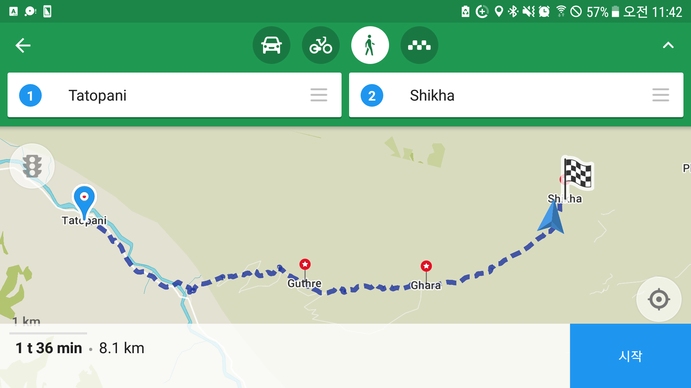

layout: post
title: 마지막 난코스 등산 시작
subtitle: "여행 D+22, 안나푸르나 D+14"
date: 2017-04-25 12:00:10
tags: 포스팅
header-img: img/170425-rest.jpg
오늘 이동한 경로 (E) -> (F) (총 17km)
Tatopani(1200) -> Ghorepani(2870)
마지막 난코스 등산 시작
새벽 4시부터 내 방앞에 있는 닭장에서 닭이 계속 울었다. 닭이 고장이라도 났는지 1분에 한번씩 꼬끼오 거린다. 잠을 잘 수가 없었다. 처음으로 귀마개를 했는데도 들렸다. 젠장. 결국 한시간 가량 눈만감은채로 누워있었다. 이 방 계산할때 반드시 할인 받을테다.
일찍 일어나서 일찍 출발하면 좋았을것을 또 늑장부리다 늦었다. 7시에 출발할 수도 있었는데 출발하니 7시40분이었다. 그나마 이전보다 빨리 출발한 것이긴 했다. 샴푸가 다 떨어져서 샴푸도 하나 구매했다. 170ml 짜리인데 꽤 무거울것 같았지만 위에 샴푸를 파는곳이 있을것 같지 않았고 가격도 비쌀것같아서 무게를 무릎쓰고 구매했다.
출발하는데 어떤 아이가 병아리들을 바구니에 담고 언덕으로 올라가 다시 내려놓는다. 병아리는 엄마가 있는 아래쪽으로 약 2미터 되는 높이를 점프한다. 병아리는 날진못해도 낭떨어지에 떨어잘때 본능적으로 날개를 퍼덕인다
오늘 목적지는 마지막 난코스인 고레파니다. 1200m 부터 2870m까지 올라가야 한다. 정말 하루도 쉬운날이 없다. 아침에 일어났는데 오른쪽 무릎에 통증이 남아있어서 걱정됐다. 이곳 타토파니에서 그냥 버스타고 포카라로 돌아갈 수도 있었다. 패트릭 타쿠어, 로즈, 라미로는 모두 그렇게 돌아갔다. 모릎도 아프고 최고 고지도 넘었고 나도 돌아갈까 하는 유혹이 자꾸 생겼다. 근데 여기서 트레킹을 마치기에는 찜찜한 기분이 들었고 그냥 일단 가보자 하다가 입구까지 가게되었다. 패트릭 이새끼 나보고 히치하이킹하고 버스 탔다고 치팅 한다고 했는데 지는 여기서 끝내고 돌아가면 그게 치팅아니냐? ㅋㅋ 사실 어제 버스탈 유혹이 많았는데 그자식이 치팅얘기를 해서 버스를 안타게 된것도 있었다. 그전에는 한번도 이게 치팅이라는 생각을 해본적이 없는데 괜히 마음이 불편해졌다. 이곳 안나푸르나에 치팅이 어딨냐! 인간은 산이 허락하는한 본인이 갈수 있는 만큼 걸을 수 있을 뿐이다. 그렇게 어제 나는 매우 무리한 보행을 한것같다. 무릎에 약간 무리가 와서 무척 걱정된다. 무릎주변 근육통이면 다행인데 연골에서 통증이 발생하는 것이면 심각하다. 제발 연골통증이 아니기를..
시작부터 힘들었다. 한걸음 한걸음이 왜이렇게 힘든거지? 맨처음 트레킹 시작할때 등산할때는 이렇게 힘들지 않았는데 짧은거리에 높은 고지로 올라가야하니 가파라서 더 힘든가 보다. 계속 계단만 있다. 계단만 있으니 더 힘들다. 무릎이 살짝살짝 아프다. 조심히 걸어야한다. 그나마 올라갈때는 걱정이 안되는데 하산할때 무릎이 고장날까봐 걱정된다.
고도를 봤다. 한참을 걸은것 같은데 아직도 1600m이다. 주변엔 또 아무도 없다. 혼자만 걷고 있으니 제대로된 방향으로 가고 있는건지, 지금내가 빠른건지 느린건지도 잘 모르겠고, 외롭기도 하다. 왜 한명도 없을까? 오늘도 또 늦게 출발한 걸까?
내 뒤에서 스틱 부딪히는 소리가 났다. 한 백인넘이 올라오고 있었다. 드디어 사람을 만났다. 근데 이자식 왤케 빠르지? 다들 나 빼고 전부 너무 빠르다. 따라잡히기 싫어서 좀더 속도를 냈다. 계단길이라 더 힘들었다. 결국 guthre 마을 언덕까지 따라잡히지 않았다. 거기서 나는 물을 구매했고 그넘은 지나갔다. 나는 일단 반가워서 인사를 했지만 그 넘은 그냥 시큰둥하게 인사를 받고 지나갔다. 쯥.  타토파니에서 시카로 가는 경로
그전까지 경로나 장소는 그닥신경쓰지 않고 갔는데 이렇게 경로를 적고 가던길을 기록하니 더 좋은것 같다. 진작 이렇게 할걸. 내일이면 트래킹도 끝나는데 아쉽다. Guthre에서 Ghara로 가는길 경치고 뭐고 볼것없이 땅만보고 걸었다. 너무 힘들었다. 오늘은 Shikha 에서 점심을 먹을것이다. 빨리 도착하고 싶다. ghara 에서 shikha 가는길에 한국인 부부를 만났다. 그동안 못보던 한국인을 여기서 다만난다.
집에가고 싶다. 자꾸 안락한것들이 떠오른다. 집에 앉아서 기가막힌 영화 한편 보고 싶다. 음악도 듣고싶다. 생각해 보니 여행 시작후 지금까지 음악을 한번도 안들었다. 왜그럴까? 인간이 만든 소리보다 자연이 만든 소리에 집중하자는 생각도 있었지만 이렇게 오랫동안 음악을 듣지 않은적은 처음이다. 집에가면 겁나 편한 이지 체어에 앉아서 직접 내린 커피를 마시면서 음악을 듣고 싶다. 겁나 흥미로운 책도 읽고 싶다. 오늘 일찍 도착하면 가서 인포메이션 읽어야지. 안락한것이 그리웠던것은 오늘이 처음이다. 오늘 정말 힘들긴 한가보다. 쏘롱라는 워낙 산소도 부족하고 악명높으니 힘든것이 이해가 가는데 여기도 그에 버금가게 힘들다.
우여곡절 끝에 shikha에 도착했다. 제일 괜찮아 보이는 롯지에 들어와서 주문을 했다. 앉아서 일기를 쓰는데 한국인 세팀이 모였다. 그동안 한국인들 다 어디있었던거지 이제야 만남. 한팀은 아까 만났던 부부고 네팔에 온지 4번째라고 한다. 또다른팀은 2년동안 세계여행중인 대학생 3명이다. 3년 휴학을 하고 1년 바짝 돈을 번뒤 2년동안 여행을 계획하고 있다고 한다. 지금 시작한지는 50일 정도 되었다고 한다. 지금까지 만난 세계여행하는 사람들의 공통된 특징은 정확하게 계획하지 않았다는 것이다. 다들 그때그때 상황에 맞게 여행하고 있었다.
오늘이 몇일인지, 여행한지 얼마나 지났는지, 이 안나푸르나에서 얼마나 있었는지 잘 모르겠다. 시간 개념이 없다. 요일감각도 없다. 오늘이 무슨요일인지는 정말 관심이 없다. 아무래도 이게 사람을 쉬게 만드는것 같다. 그동안 철저한 시간 개념속에 살다가 해방된 느낌이다. 그래서 여행이 사람을 쉬게하는것 같다.
영화보고 싶다 미친듯이. 원래 영화보는것을 엄청 좋아하는데 못보니 근질근질 하다. 포카라가서 사람들에게 다운받아놓은 영화를 빌려서 한판 때려야겠다.
영어에 대하여
그래도 이곳에서 몇일동안 걸으면서 영어로 무지 많이 대화했다. 신기하게도 어떻게 저렇게 영어로 대화할 기회가 자꾸 생긴다. 예전에는 바로바로 할말이 영어로 생각이 나지 않아서 대화가기가 어렵고 말을 꺼내기도 두려웠는데 이제는 그런것들은 극복한것 같다. 일단 문장구조가 말도 안되더라도 내밷고 본다. 의미만 잘 전달되면 되기 때문이다. 어차피 영어는 이제 미국넘들 영국넘들만의 언어가 아니다. 모든 나라 사람들이 사용하는 언어기 때문에 틀리게 말하는것을 두려워할 필요가 없다. 여행 떠나기전에 조승연의 플루언트라는 책을 읽고 왔는데 많은 도움이 되었다.
영어를 못하더라도 외국인들에게 먼저 말걸고 인사하다보니 자연스럽게 대화하게 되니 자동으로 영어공부가 된다. 책상에 앉아서 하는 영어공부(시험을 위한 영어공부)는 가짜다. 진짜 영어공부는 생활에서 일어나야 하는것 같다. 외국인이 하는말이 잘 들리지 않아도 상관없다. "Say it again" 또는 "What did you say?" "Speak slowly please" 라고 말하면 된다. pardon me? 라고 격식따위 갖출 필요도 없다. 그 외국놈은 어차피 우리에게 절대 pardon me?라고 묻지 않는다.
영어에 대해 한가지 느낀것이 있다. 영어로 말을 할때 초등학생 수준의 쉬운말로 해야한다는 것이다. 사고는 언어를 기반으로 만들어진다. 우리는 한국어 기반으로 고차원의 사고를 할 수 있다. 하지만 영어로는 아직 그렇게 할 수 없다. 이것이 영어로 말이 잘떨어지지 않는 이유인것 같다. 한국어 기반의 고 수준의 사고에서 비롯된 문장을 영어로 변환하려고 하다보니 말이 나오지 않는 것이다. 영어를 사용할 때는 정말 쉬운 사고로 전환해서 그것을 영어로 표현해야 한다. 그리고 영어로 생각하는 순련이 필요하고 점진적으로 그 사고 수준을 높히면된다.
Marpha에 있을때 패트릭에게 "해가 지면 뜨거운 물을 사용할 수 없기 때문에, 우리 빨리 들어가서 샤워를 하는게 좋을것 같다"는 말을 하고 싶어서 더듬더듬 거리 다가 결국 하지 못했는데 의미는 대충 전달 되었는지 패트릭이 교정해줬다. 그것은 "After sunset, there is no hot shower" 였다. 그때 큰 깨달음을 얻었다. 깊이있는 의미를 모두 전달할 필요가 없었다. 지금 영어수준이 낮기 때문에 지금 수준으로 할 수 있는 사고나 생각을 표현하면 된다. 패트릭이 했던말 정도면 충분히 의미가 전달될 수 있는것이다. 시카에서 고레파니까지 가는 마지막 코스
점심을 먹은 뒤라 그런지 아침보다 훨씬 수월했다. 그리고 마침내 내 페이스를 찾았다. 내 페이스대로 등산하니 크게 힘들지 않고 오를 수 있었다. 내일이면 안나푸르나 트레킹이 끝나는데 이제야 그걸 알게 되었다니.. 계단을 오를때는 아주 작은 계단으로 천천히 올라야한다. 작은 보폭으로 젖산이 쌓이지 않을 정도로만 오른다. 뒤에서 앞에서 따라오거나 지나치는 사람이 있으면 조급해지는데 이제 그것들을 무시하고 내 페이스를 유지할 수 있게 된것도 한몫했다. 휴식은 가방을 메고 5분 정도만 앉아 있는다. 15분 이상 쉬어버리면 다시 페이스에 적응할 시간이 필요해서 더 힘들다.
우여곡절 끝에 드디어 고레빠니에 도착했다. 아침 7시40분에 출발해서 오후 4시 30분에 도착했다. 걷는시간만 치면 8시간 정도 걸은것이다. 약 1600m를 하루만에 올랐다. 처음에 이걸 어떻게하나 싶었지만 결국 가능한 거였다. (당분간은 이런짓 안할거다) 할 수 있는거구나. 놀랍다. 힘들었지만 결국 해냈다.
드디어 도착한 고레파니 하지만 이곳에서도 한 30분은 걸어 들어갔다
중간중간 트레커들의 휴식을 위해 마련되어있는 의자. 이 의자를 만날때마다 반갑다.
올라가는 길에 한국인 부부가 고용한 포터와 친해졌다. 이름은 "사전"이다. 숙소도 그가 추천해준 숙소로 묶게 되었다. 내가 본 네팔 사람중에 제일 잘생긴것같다. 그리고 친절하다. 우리는 올라가면서 계속 마주치며 즐겁게 대화했었다. 도착한 숙소에서 천국같은 온수샤워를 마치고 너무 힘들어서 샤워하고 잠깐 누웠는데 한시간 가량 선잠을 잔것같다. 저녁식사를 하러 식당에 갔는데 아까 그 부부와 이야기를 하게 되었다.
어른에 대한 막연한 선입견이 있다. 우리 부모세대 어른들은 항상 훈계조로 무언가를 가르쳐주려고 한다. 물어보지 않았는데도 가르쳐주려고 하는것이 꼰대다 라고 나는 정의내린다. 하지만 신기하게도 여행에서 만난 어른들은 그런사람들이 별로 없었다. 오늘 만난 이부부도 약 연세가 약 60정도 되시는데 전혀 그런모습이 없었다. 내가 어리다고 무시하고 가르쳐 주려고 하고 이런부분이 전혀 없어서 대화하는데 아무런 무리가 없었다. 친구랑 대화하는 느낌이었다. 어른들과 친구가 되는것. 내가 항상 위계질서 없는 외국 문화에서 부러워 했던 문화다. 여행와서 이런 어른에대한 선입견이 많이 깨졌다.
오늘 이분들과 대화를 통해 내가 크게 배운것이 있다. 여행을 하고 싶은데 막상 하지 못하는 우리는 항상 수많은 핑계거리를 만든다. 돈이 없고, 시간도 없고, 영어등 외국어도 못하고, 여행 계획을 세우지 않았다는 등의 핑계다. 결국 가고 싶어도 가지 못하는게 여행이다. 이 분들은 그런 조건들이 여행에 방해가 된다는것을 알고 그것을 몸소 극복 하고 계시는 분들이었다. 그들은 이렇게 말했다. 여행을 떠나기 위해서는 딱 한가지만 필요한데 그것은 바로 "용기" 라고.
한국에 있을때 세계여행자는 내게 항상 신기한 사람이었다. 한국에서 휴가를 나오신 이분들도 나를 그렇게 보셨나보다. 내 블로그 주소를 적어가셨다. 나도 그런 세계여행자가 되었다는 사실이 새삼 신기했다.